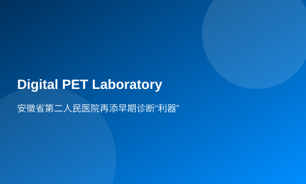

The Second People's Hospital of Anhui Province has added a "sharp tool" for early diagnosis.
Xinhua News Agency Client Hefei, February 23 (Reporter Dai Wei) On the 23rd, the opening ceremony of China's representative achievement in high-end medical equipment, full digital PET/CT, was held at the Second People's Hospital of Anhui Province. The Full Digital PET Clinical Diagnosis and Research Center was also officially unveiled on that day.
Digital PET, as a representative achievement of China's high-end medical equipment, has been developed by Chinese research teams over twenty years and industrialized by Ruisi Medical Company. According to reports, the Second People's Hospital of Anhui Province is a provincial-level comprehensive hospital affiliated with the Health Commission of Anhui Province, equipped with complete disciplines and advanced diagnostic capabilities. The hospital owns high-energy linear accelerators, 3.0T MRI machines, and other cutting-edge medical equipment. Industry experts believe that the installation of Digital PET at the Second People's Hospital of Anhui Province is a typical case of interdisciplinary cooperation between medicine and engineering. On one hand, it provides powerful tools for precise treatment and early diagnosis; on the other hand, it helps to further expand the application scenarios of digital PET, ensuring an iterative path where 'we are better than others' in terms of domestic high-end medical equipment, thereby contributing to the growth and strength of the industry.
Wang Xuemei, Director of Nuclear Medicine at the First Affiliated Hospital of University of Science and Technology of China (Anhui Provincial Hospital) and Chairperson of the Nuclear Medicine Branch of Chinese Medical Imaging Technology Research Society, believes that the most impressive feature of full digital PET/CT is its extremely fast imaging speed. 'This device can complete a single bed scan in 20 seconds, with a whole-body scan taking only 135 seconds. This means that patients' scanning time has been reduced to one-sixth of what it used to be, significantly improving the efficiency of examinations; at the same time, this equipment requires lower doses of tracer agents than conventional doses, which can greatly reduce drug purchase costs,' Wang Xuemei said.
Ma Bin, Director of Nuclear Medicine at the Second People's Hospital of Anhui Province, introduced that Digital PET has a significant advantage in precise quantification. This is particularly important for early diagnosis and precise treatment of major diseases such as digestive system malignancies, including esophageal, gastric, intestinal, hepatic, biliary, and pancreatic organ diseases. With the help of Digital PET, it is expected to further enhance the comprehensive strength of the hospital's gastroenterology specialty.
Ma Bin stated that previously, high-end medical equipment like PET was long monopolized by Western large-scale medical enterprises in terms of technology and market share. In recent years, with the enhancement of national technological capabilities, a batch of representative domestic high-end medical devices such as Digital PET have emerged. Not only has there been product substitution domestically, but also significant progress has been made in multiple aspects of product indicators, providing hospitals with powerful tools for early diagnosis and precise treatment.
Zhang Bo, General Manager of Ruisi Medical, introduced that so far, six models of Digital PET devices have obtained Class III medical device registration certificates to enter the market. Among them, four models were concentratedly certified in 2023, forming a rich product matrix.
In August 2021, Digital PET was officially established as a 'Double Recruitment and Introduction' project in Hefei High-tech Zone. The Capital Investment Group of Hefei led the first round of equity financing. Chen Fang, Deputy General Manager of Ruisi Medical, introduced that since its establishment in Hefei, the industrialization development of Digital PET has rapidly accelerated, achieving overseas sales. It is understood that recently, the company has also opened a new production base in Feixian County, Shandong Province.
Li Zhongya, General Manager of Hefei Capital Investment Fund Management Co., Ltd., said that according to industry rules, Ruisi Medical's industrialization progress has exceeded expectations. 'Before Ruisi Medical was established in Hefei, we had spent a long time tracking and studying the company, which has a solid industrial foundation. According to the development pattern of high-end medical equipment, it usually takes 7 to 8 years on average to obtain Class III registration certificates. The progress made by the team so far has already exceeded our expectations,' Li Zhongya said. 'The technical threshold from zero to one is the highest, and the team has overcome this challenge. The commercialization process from one to ten is a gradual progression, and we are very confident about the product.'